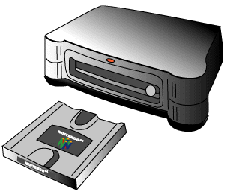
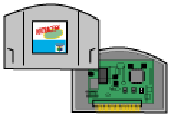

The PI is the 16-bit parallel bus connection the N64 Game Pak or the N64 Disk Drive. The average transfer rate for the Game Pak is about 5 megabytes per second. (The peak performance is about 50 megabytes per second.) The PI uses DMA transfer to transfer information from the Game Pak or N64 Disk Drive to RDRAM.
The PI is the DMA engine that connects the N64 Game Pak and/or the N64 Disk Drive with RDRAM. The average transfer rate for the Game Pak is 5 megabytes per second. The maximum transfer rate for the N64 Disk Drive is 1 megabyte per second.
As you know, the actual game application is stored in the ROM of the N64 Game Pak or on the disk for the N64 Disk Drive. When you use the N64 emulator board you use the RAM (called virtual ROM or RAMROM) of the developmental board. The communication between the host machine and the developmental board is provided through the RAM device on the developmental board.
The N64 Game Pak can include up to:
Store the data that users do not rewrite, such as the game program or the character data, in the ROM part. Store the saved data in the RAM part. An identification number (ID) is written on the Disk to identify each individual Disk when it is shipped from the factory. This ID is used when the Disk must be changed such as with multiple Disk game programs.
Nintendo® Confidential
Copyright © 1999
Nintendo of America Inc. All Rights Reserved
Nintendo and N64 are registered trademarks of Nintendo
Last Updated March, 1999